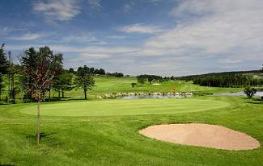
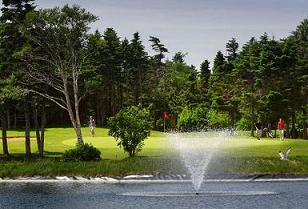
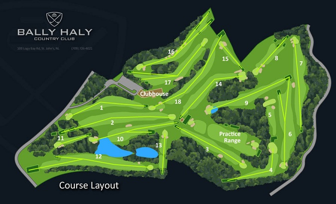

Click the image above
to visit BallyHaly.com
 
Bally Haly Golf and Curling Club has a reputation of producing some of the finest golfers Newfoundland and Labrador hasto offer. Celebrating its 100th anniversary in 2008, Bally Haly has hosted two Ladies' Amateur Golf Championships, in 1979 and 1989, the 2003 Canadian Senior Men's Golf Championship and hosted the 2008 Canadian Senior Women's Golf Championship. The golf course plays to a challenging par 70 and has undergone recent changes designed by world-renowned golf course architect Graham Cooke. In 2004 Bally Haly installed a fairway irrigation system to better conditionthe golf course. Its undulating fairways and prevailing winds make the short layout a challenge for all golfing abilities.

Bally Haly presents a far more challenging game than its course yardage suggests. The hilly and rolling fairways of Bally Haly rarely present a flat lie and will constantly challenge every level of golfer. As well, the formidable winds of St. John's will also provide a constant opponent with the native breeze requiring many a demanding shot into cross and head winds.
